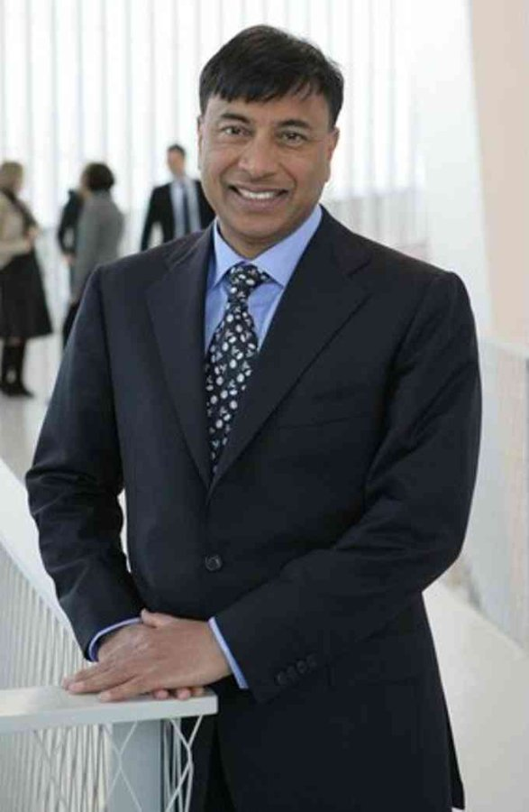

← Back to the founder directory

Lakshmi Mittal
From a family steel mill in Calcutta to a small plant in Indonesia, and then to ArcelorMittal, the steelmaker he built by buying struggling plants around the world.
- Born
- 15 June 1950, Sadulpur, Rajasthan
- Citizenship
- India
- Known for
- ArcelorMittal
- Role
- Executive Chairman
Early life and education
Lakshmi Niwas Mittal was born in Sadulpur, Rajasthan, to a Marwari family. His father, Mohanlal Mittal, ran a steel business, and in the 1960s the family moved to Calcutta (now Kolkata). Lakshmi went to Shri Daulatram Nopany Vidyalaya and then to St. Xavier's College, where he earned a bachelor of commerce degree. Britannica says he studied science and graduated in 1970, while the company and Wikipedia say commerce, so the page follows those two. He worked at his father's mill while studying and joined the family steel business after college.
Going abroad: Indonesia
In 1976, at 26, he opened his own steel plant, PT Ispat Indo, in Sidoarjo, East Java, Indonesia. Wikipedia links the move to Indian government limits on steel production at the time. He then spent more than a decade learning how to run a steel mill efficiently, which became the base for everything that followed.
The turnaround formula
In 1989, Mittal bought the state-owned steelworks in Trinidad and Tobago, which was losing large sums of money. According to Britannica, within a year it had doubled its output and turned profitable. He used the same approach again and again: buy a struggling, often state-run plant, send in a management team to reorganise it, and run it better.
Acquisitions followed in Ireland (1995), Mexico, Kazakhstan, Romania and Poland, among others. In Britannica's account of his philosophy, a weak and fragmented steel industry needed consolidation, because small producers could not negotiate good prices with big customers such as carmakers.
Building the world's biggest steelmaker
In 2004, Mittal merged his companies, Ispat International and LNM Holdings, and acquired the US company International Steel Group, creating Mittal Steel, then the world's largest steelmaker. In 2006 he won a closely watched bid for Arcelor, a hostile takeover that was widely covered in the press, and the combined company became ArcelorMittal. It spans steelmaking and mining across North and South America, Europe, Africa and Asia. Mittal was CEO from 2006 to 2021. In February 2021 he became executive chairman, and his son Aditya Mittal became CEO. He is also chairman of the stainless-steel maker Aperam.
Boards and other roles
Mittal has served on the Goldman Sachs board since 2008, according to Wikipedia, and MarketScreener lists his term as running to 2026. He is a member of the World Steel Association's executive committee, the World Economic Forum's International Business Council and the European Round Table of Industrialists, and sits on the board of the Cleveland Clinic and the governing board of the Indian School of Business.
Philanthropy and sport
With his wife, Usha, he has funded education and child health. In the early 2000s they helped found the LNM Institute of Information Technology in Jaipur, together with the Government of Rajasthan. Their other gifts include £15 million to Great Ormond Street Hospital in London for the Mittal Children's Medical Centre, a 2017 gift to Harvard for its South Asia Institute, a vaccinology professorship at Oxford in 2020, and ₹100 crore to the PM CARES Fund in 2020.
He also set up the Mittal Champions Trust to support Indian Olympic hopefuls. The family bought a 20% stake in the English football club Queens Park Rangers in 2007. In May 2026, a group led by Mittal and Adar Poonawalla agreed to buy the IPL cricket team Rajasthan Royals, with Mittal holding about 75%, according to reports cited by Wikipedia.
Criticism
His rise has also drawn criticism. Irish Steel in Cork, bought in 1995 for a token IR£1, closed in 2001 with more than 400 jobs lost, and a dispute over the clean-up cost followed. After 23 miners died in a 2004 explosion at a Kazakhstan mine, workers and unions criticised safety conditions. In 2002, a 2001 donation of £125,000 to the UK Labour Party, and a letter from Prime Minister Tony Blair supporting his bid for Romanian steel assets, caused a political row.
Later years
Mittal lived in London from 1995. In 2025 he was reported to be leaving the UK after the government ended the non-domiciled tax status, and The Sunday Times reported that he is now resident in Switzerland and will spend much of his time in Dubai.
Timeline
- 1950Born on 15 June in Sadulpur, Rajasthan.
- 1976Opens PT Ispat Indo in Indonesia.
- 1989Buys the loss-making state steelworks in Trinidad and Tobago.
- 1995Buys Irish Steel in Cork.
- 2003Takes over Romanian and Polish steel assets.
- 2004Forms Mittal Steel, then the world's largest steelmaker.
- 2006Wins the bid for Arcelor; ArcelorMittal is formed.
- 2008Receives the Padma Vibhushan; joins the Goldman Sachs board.
- 2021Becomes executive chairman; son Aditya becomes CEO.
- 2025Reported to leave the UK for Switzerland and Dubai.
- 2026Leads a group buying Rajasthan Royals.
Recognition
- Padma Vibhushan, India's second highest civilian honour (2008)
- Forbes Lifetime Achievement Award (2008)
- Financial Times Person of the Year, Sunday Times Business Person of the Year and Time International Newsmaker of the Year (2006)
- Time 100 list (2007)
- Fellowship of King's College London and the Bessemer Gold Medal (2007)
- Gary Medal of the American Iron and Steel Institute (2018)
Leadership lessons
- Buy what others undervalue, then run it better. Failing plants were his raw material.
- Learn the craft first. He spent over ten years mastering one mill before expanding.
- Scale gives bargaining power. A bigger steelmaker could negotiate better prices with big customers.
- Be ready to go where the opportunity is. He built his empire far from the market where he started.
Sources
Written from public information, including Wikipedia, ArcelorMittal, Britannica Money and MarketScreener. The sources differ on some details, such as his degree and how the Arcelor deal is dated (2006 or 2006–07), so the company profile and Wikipedia are followed where they differ. Net worth is left out because estimates conflict and MarketScreener's figure counts only a small public holding.